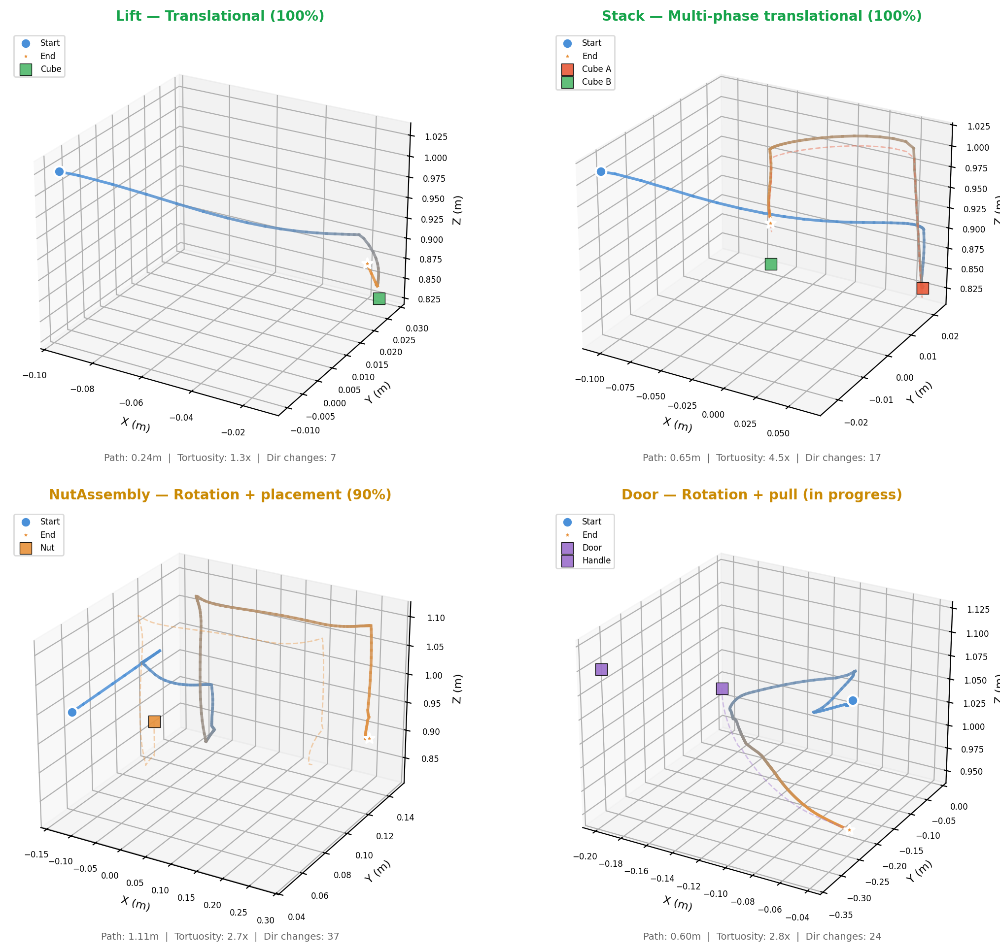

RoboScribe
Language-Guided Scripted Policy Generation for Robotic Manipulation
MIT CSAIL · 2025Abstract
Collecting scripted trajectories is a necessary step in early-stage robotics research. Noiseless, controllable demonstrations enable clean experiments before moving to noisy human data. Yet writing scripted policies by hand requires researchers to spend hours learning simulator APIs, observation spaces, and low-level controller details. We present RoboScribe, a language-guided pipeline that converts natural language task descriptions into executable low-level control policies for robotic manipulation in simulation. RoboScribe splits the problem into a human-reviewed phase design step and an autonomous generate-test-diagnose-revise code loop. We evaluate across four manipulation tasks of increasing difficulty and find that the system achieves 100% success on standard tasks (Lift, Stack) while exposing fundamental limits of LLM-generated code on tasks requiring precise geometric reasoning (NutAssembly, Door).

Figure 1: 3D end-effector trajectories generated by RoboScribe across four robosuite environments. Stage 1 (Phase Design): the LLM auto-detects the environment, introspects observation/action spaces, and designs a phase plan for human review. Stage 2 (Code Iteration): a tool-use agent generates code from the approved plan, tests in simulation, diagnoses failures from trajectory metrics, and iterates with optional human feedback.
Method
RoboScribe is a two-stage pipeline combining human strategic oversight with autonomous code generation:
- Stage 1 — Phase Design (human-in-the-loop): Given a natural language task description, the LLM detects the appropriate robosuite environment, introspects observation/action spaces via live simulation, and decomposes the task into a sequence of control phases. The researcher reviews, edits, or approves the phase plan.
- Stage 2 — Code Iteration (autonomous agent loop): The LLM generates a complete Python policy implementing the approved phases as a state machine. The policy is tested in simulation, failures are diagnosed via trajectory metrics and video frames, and the agent revises the code. The loop runs until success reaches 80% or the turn limit is hit.
- Domain Constraints: Critical geometric knowledge that LLMs cannot reliably derive from first principles — action formats, gripper timing, control patterns, and environment-specific rules — is injected into the prompt as guardrails.
Results
We evaluate across four robosuite manipulation tasks of increasing geometric complexity:
- Lift (translational): 100% success — the LLM reliably generates correct position-control code.
- Stack (two-object): 100% success — diagnostic-driven iteration fixes alignment errors in one revision (0% → 100%).
- NutAssembly (quaternion math): 40% best rate — requires precise geometric computations that succeed variably across runs.
- Door (rotation + pull): 0% success — coupled contact-rich constraints exceed what current LLMs can synthesize.
The diagnostic system correctly identifies failures in every case — the bottleneck is code synthesis, not failure detection. Human feedback during code iteration does not improve outcomes; the effective intervention point is phase design, where human strategy expertise has the highest leverage.
System Implementation
RoboScribe is a decoupled, real-time web application. The backend is a FastAPI application (Python 3, Uvicorn) exposing REST endpoints and WebSocket channels for streaming intermediate results during long-running agent execution. The frontend is a single-page React (JSX) application bundled with Vite. The system supports four LLM backends: OpenAI, Anthropic, Qwen, and DeepSeek.
Citation
@article{tang2025roboscribe,
title = {RoboScribe: Language-Guided Scripted Policy Generation for Robotic Manipulation},
author = {Tang, Yuer and Chen, Bree},
year = {2025},
institution = {MIT CSAIL}
}